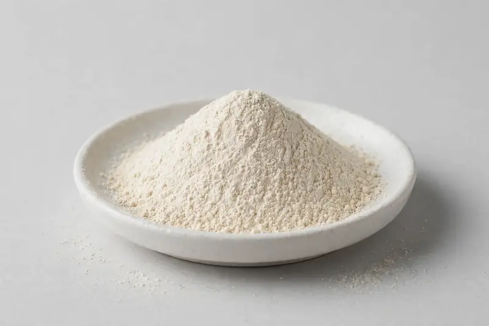

Spray-dried fruit powder for beverage, confectionery and cosmetic formulations, polyphenol-positioned.

Overview
Lychee extract is a spray-dried fruit powder carrying the characteristic aroma and polyphenol profile of Litchi chinensis. It is positioned in beverages, confectionery and cosmetics where a fruit-forward identity is wanted. Buyers commonly specify polyphenol content or a carrier ratio such as 4:1 or 10:1. As a Xi'an-based trading company, we source through partner producers and confirm feasibility once your target spec is received.
Specifications below reflect commonly requested options in the market — not a stock list. Share your target spec and we'll confirm exactly what we can supply, honestly.
| Specification | Details |
|---|---|
| Botanical identity | Spray-dried lychee extract powder |
| Marker compound | Commonly requested spec grades: polyphenol-positioned, ratio grades such as 4:1 or 10:1, actual specs confirmed on inquiry |
| Appearance | Off-white to light beige fine powder |
| Mesh size | Typically 80–100 mesh (confirm per inquiry) |
| Testing | COA/TDS arranged on request; scope agreed per your spec |
Applications
Documentation
We don't claim in-house labs or certifications we don't hold. COA and TDS documents can be arranged on request, and testing scope is agreed against your specification before supply.
FAQ
Related products
Phosphatidylserine
Key marker: 20-50% PS
View specs →L-Alpha-glycerylphosphorylcholine
Key marker: 50% / 99%
View specs →L-Citrulline
Key marker: 99%+
View specs →Prunus salicina
Key marker: Phenolics
View specs →Prunus persica
Key marker: Ratio Grade
View specs →Buyer guides
Buyer’s guide
Identity, actives, heavy metals, micro — what each section of a Certificate of Analysis means, and the red flags that tell you to walk away.
Read the guide →Buyer’s guide
Section-by-section COA walkthrough — marker assays, heavy metals, micro panels, red flags, and a buyer checklist.
Read the guide →Send your target spec and volumes — we'll respond with a tailored quotation.
Request a Quote